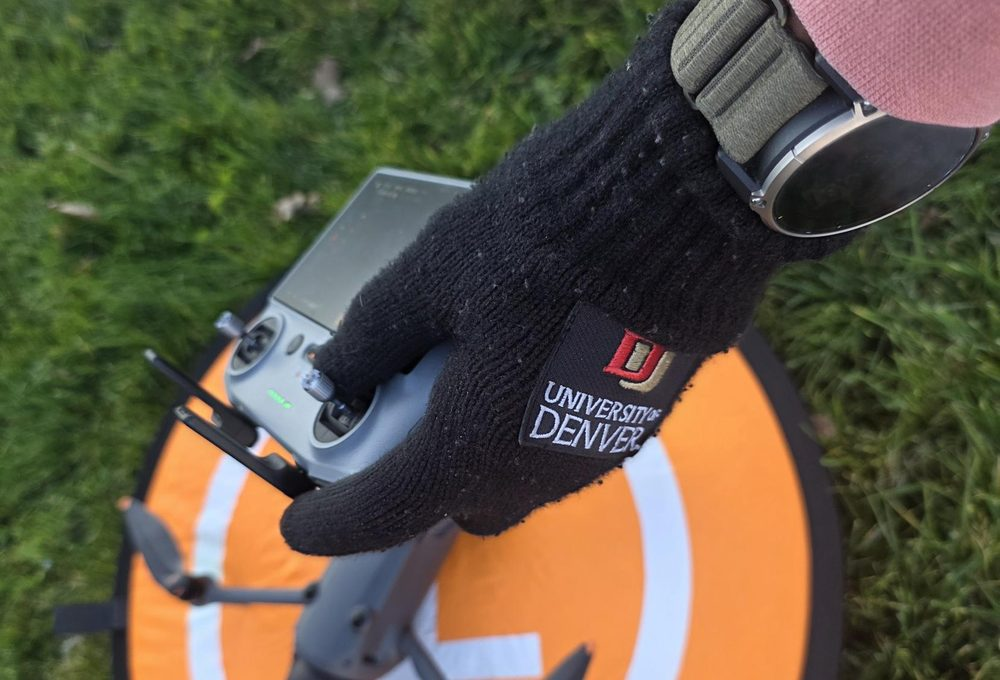
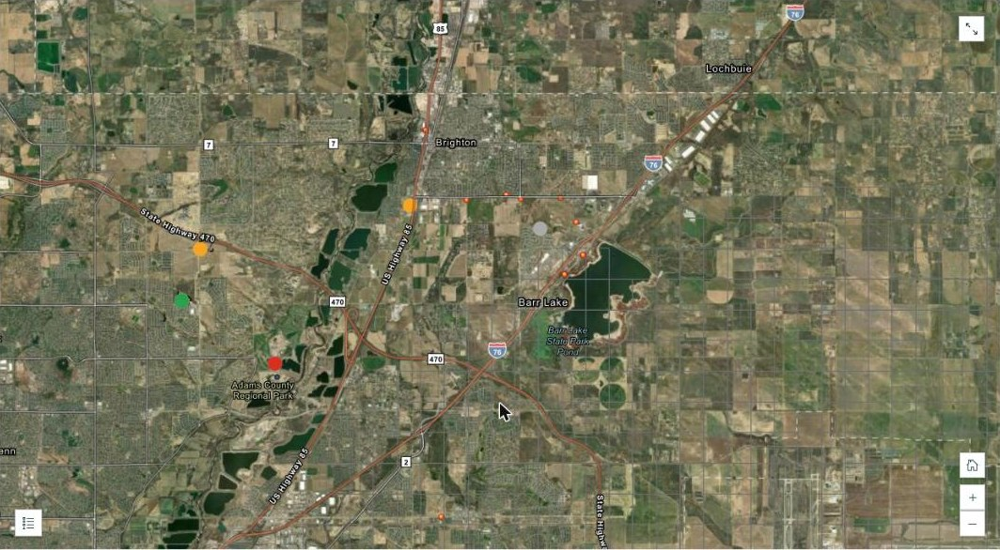
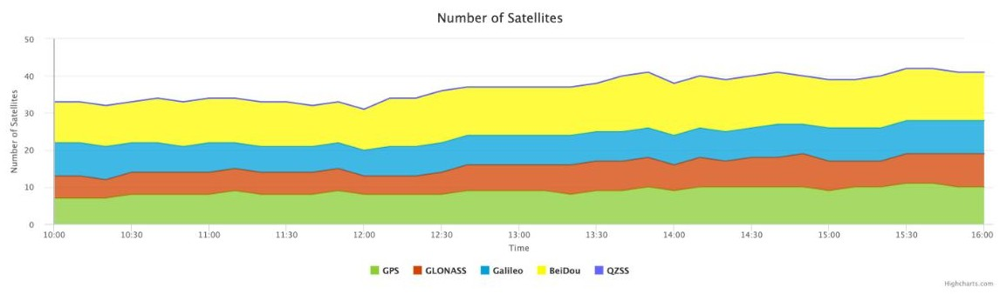
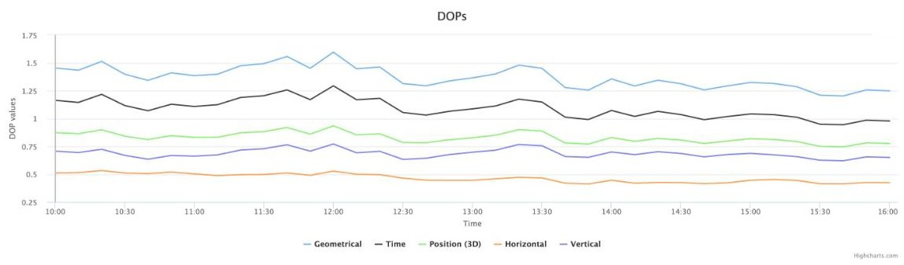
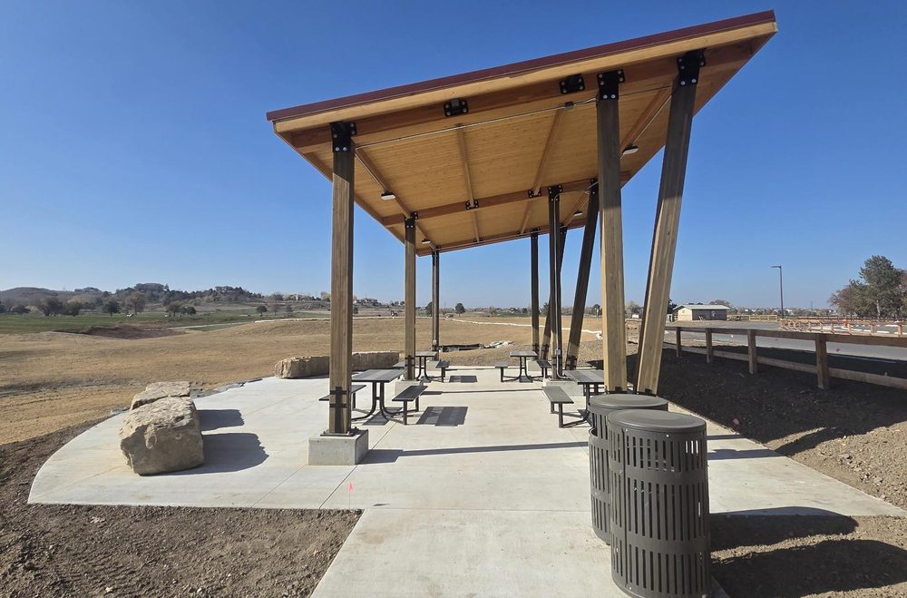

Where Can I Fly? Drone Launch Sites in Adams County

The Question
Where can a drone pilot legally take off in north metro Adams County, and what hazards and limits apply at each site?
Overview
This was the final project for GIS 4690, GPS for GIS, in the University of Denver GIS and UAS certificate. As a Part 107 pilot I answer this question before every flight at a new site, and the answer has always been scattered across an airspace app, satellite imagery and a site visit. I designed a five-layer field database in ArcGIS Pro, scouted candidate sites with a QuickCapture project, then collected launch zones, hazards, restricted areas, parking and access routes in ArcGIS Field Maps. Each launch zone records its land owner, legal status, a link to the official rule and notes for the next pilot. The work is delivered as an ArcGIS StoryMap with an embedded web map.
What I Found
- Legal launch sites are scarce. Of six launch zones surveyed, two are allowed with conditions, two are roadside right-of-way, one is closed and one is not permitted.
- The land owner decides takeoff and landing, separately from the airspace. All four November sites sit outside the FAA UAS Facility Map grid, yet only one is a site I would send another pilot to today: Aylor Open Space in Thornton.
- Adams County allows drone takeoff and landing on its park land only at one designated drop-in area, which was closed for construction when I surveyed it.
- Brighton and Commerce City park rules do not mention drones. I treated silence as no permission and marked no site in those cities as allowed.
Processing
Coordinate Reference Systems
- Horizontal
- WGS 84 (collection); Web Mercator (web map)
Methods
- Scouting: 26 photo-documented points logged in a QuickCapture project (14 opportunities, 9 hazards, 3 airport or heliport rule checks) to pick the sites worth a full survey
- Mission planning: satellite geometry for the collection window documented with Trimble GNSS Planning Online predictions (PDOP 0.75 to 0.93, more than 30 satellites in view)
- Data model: five feature classes built in ArcGIS Pro covering points, lines and polygons, published as hosted feature layers
- Collection: ArcGIS Field Maps on phone GNSS across two sessions (October 25 and November 15, 2026), with photo attachments and an airspace check at every site
- Attribution: site name, land owner, legal status, official rule link and pilot notes recorded for each launch zone
- Quality control: completeness, duplicate, position-over-imagery and logic checks, which caught and corrected an attribute shift between two sites after a row deletion
- Delivery: StoryMap narrative, web map symbolized by legal status with FAA UAS Facility Map data as a reference layer, and file geodatabase exports
Evidence




Deliverables
- ArcGIS StoryMap covering purpose, needs assessment, mission planning, methodology, processing, quality control, export, analysis and conclusions
- Public web map with launch zones symbolized by legal status, plus hazards, restricted areas, parking and access routes
- 24 GPS-collected features: 6 launch zones, 6 hazards, 5 access routes, 4 parking points, 3 restricted areas
- File geodatabase exports of both hosted feature layers
- Self-hosted interactive map of the November survey on this site
Key Technical Challenge
Turning a legal question into a data model. Airspace, land ownership and local rules each come from a different source, so the launch zone layer needed fields that hold the answer and its evidence together: legal status, land owner and a link to the rule itself.
Lessons Learned
Scout in daylight: my first look at one site was at night and I mistook a rise in the ground for a fence. Load an imagery basemap before leaving home, because lines are hard to place against a street map. Check layer settings before the field day, since photo attachments were disabled on my layers and that cost time at the first site. Phone GNSS at about 8 ft is enough to show which side of a road a launch zone is on, and it is not enough to locate a property line.